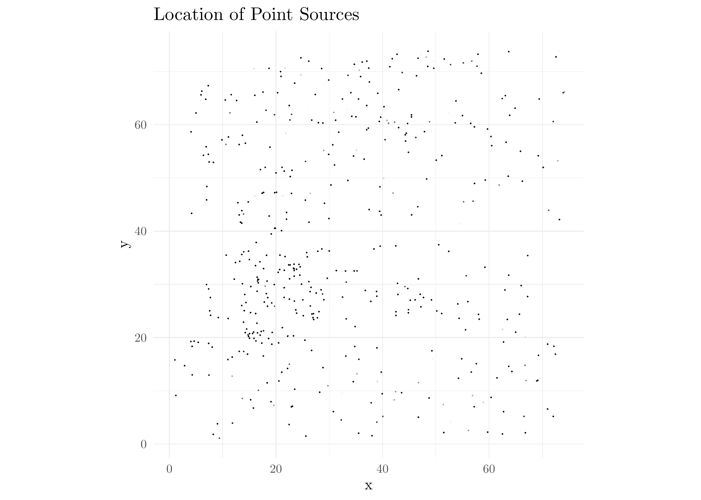

Last updated: 2024-07-08
Checks: 7 0
Knit directory: MATHPOP/
This reproducible R Markdown analysis was created with workflowr (version 1.7.1). The Checks tab describes the reproducibility checks that were applied when the results were created. The Past versions tab lists the development history.
Great! Since the R Markdown file has been committed to the Git repository, you know the exact version of the code that produced these results.
Great job! The global environment was empty. Objects defined in the global environment can affect the analysis in your R Markdown file in unknown ways. For reproduciblity it’s best to always run the code in an empty environment.
The command set.seed(20240702) was run prior to running
the code in the R Markdown file. Setting a seed ensures that any results
that rely on randomness, e.g. subsampling or permutations, are
reproducible.
Great job! Recording the operating system, R version, and package versions is critical for reproducibility.
Nice! There were no cached chunks for this analysis, so you can be confident that you successfully produced the results during this run.
Great job! Using relative paths to the files within your workflowr project makes it easier to run your code on other machines.
Great! You are using Git for version control. Tracking code development and connecting the code version to the results is critical for reproducibility.
The results in this page were generated with repository version bd30aeb. See the Past versions tab to see a history of the changes made to the R Markdown and HTML files.
Note that you need to be careful to ensure that all relevant files for
the analysis have been committed to Git prior to generating the results
(you can use wflow_publish or
wflow_git_commit). workflowr only checks the R Markdown
file, but you know if there are other scripts or data files that it
depends on. Below is the status of the Git repository when the results
were generated:
Ignored files:
Ignored: .DS_Store
Ignored: analysis/.DS_Store
Ignored: data/.DS_Store
Ignored: data/GC_prob/.DS_Store
Ignored: data/point_source_data/.DS_Store
Ignored: data/prob_GC_data/.DS_Store
Ignored: data/sim/.DS_Store
Ignored: data/v10acs/.DS_Store
Ignored: data/v10wfc3/.DS_Store
Ignored: data/v11acs/.DS_Store
Ignored: data/v11wfc3/.DS_Store
Ignored: data/v12acs/.DS_Store
Ignored: data/v12wfc3/.DS_Store
Ignored: data/v13acs/.DS_Store
Ignored: data/v13wfc3/.DS_Store
Ignored: data/v14acs/.DS_Store
Ignored: data/v14wfc3/.DS_Store
Ignored: data/v15acs/.DS_Store
Ignored: data/v15wfc3/.DS_Store
Ignored: data/v6acs/.DS_Store
Ignored: data/v6wfc3/.DS_Store
Ignored: data/v7acs/.DS_Store
Ignored: data/v8acs/.DS_Store
Ignored: data/v9acs/.DS_Store
Ignored: data/v9wfc3/.DS_Store
Ignored: source/.DS_Store
Ignored: source/v8wfc3/
Note that any generated files, e.g. HTML, png, CSS, etc., are not included in this status report because it is ok for generated content to have uncommitted changes.
These are the previous versions of the repository in which changes were
made to the R Markdown (analysis/vignette.Rmd) and HTML
(docs/vignette.html) files. If you’ve configured a remote
Git repository (see ?wflow_git_remote), click on the
hyperlinks in the table below to view the files as they were in that
past version.
| File | Version | Author | Date | Message |
|---|---|---|---|---|
| Rmd | bd30aeb | david.li | 2024-07-08 | wflow_publish("analysis/vignette.Rmd") |
| html | e750655 | david.li | 2024-07-08 | Build site. |
| html | 8fb288d | david.li | 2024-07-07 | Build site. |
| Rmd | 2e42542 | david.li | 2024-07-07 | wflow_git_commit(all = T) |
| html | 3dee3e9 | david.li | 2024-07-06 | Build site. |
| html | dc09c08 | david.li | 2024-07-06 | Build site. |
| html | 64686bd | david.li | 2024-07-06 | Build site. |
| html | 0a9d403 | david.li | 2024-07-05 | Build site. |
| html | c1fd386 | david.li | 2024-07-04 | Build site. |
| Rmd | 33fc566 | david.li | 2024-07-04 | wflow_git_commit(all = T) |
| html | 33fc566 | david.li | 2024-07-04 | wflow_git_commit(all = T) |
| html | 6ff1ccc | david.li | 2024-07-04 | Build site. |
| html | 0b819e1 | david.li | 2024-07-03 | Build site. |
| html | 44c0586 | david.li | 2024-07-03 | Build site. |
| html | 345edbd | david.li | 2024-07-03 | Build site. |
| html | 957c2e2 | david.li | 2024-07-03 | Build site. |
| Rmd | 199856c | david.li | 2024-07-03 | wflow_publish(c("analysis/index.Rmd", "analysis/vignette.Rmd", |
| html | 3030b0c | david.li | 2024-07-03 | Build site. |
| Rmd | db0f025 | david.li | 2024-07-03 | Initial Build |
| html | db0f025 | david.li | 2024-07-03 | Initial Build |
This tutorial assumes that the users have installed R
and RStudio, and have the data at hand. The data can either
be a probabilistic GC catalog or a binary GC catalog.
To start, we need to load the necessary R packages:
library(tidyverse)
library(sf)
library(sp)
library(raster)
library(Rcpp)
library(RcppArmadillo)
library(spatstat)
library(VGAM)If you have not installed the above packages, install them with the
command install.packages('package name') change
package name to the name of whatever packages you need.
Next, load all the required functions through the source files as
below. Make sure that the working directory is the one you are currently
at. If you have downloaded the entire R project repository
from Github, and you are working within the project directory, you
should be fine.
sourceCpp('code/cpp_help_func.cpp') # Necessary help functions written in C++
source('code/fit_mod_MCMC.R') # Source file for running the modelThe data we will demonstrate with in this tutorial is the GC catalog from the field V11-ACS from the PIPER survey. This field has two normal galaxies (early-type) and two known UDGs. The data we are using is the probabilistic GC catalog used in the main paper obtained by DOLPHOT. To obtain the probabilistic GC catalog, see here.
You can also use a binary GC catalog, but it is assumed that the binary GC catalog is not truncated at the faint end, i.e., faint sources are not removed. However, this would require your data are low in noise at the faint end, so proceed with caution as otherwise the results are unreliable.
We read in the data by:
Y_obs <- read_csv('data/prob_GC_data/v11acs_pGC.csv') # Name the data object Y_obs
head(Y_obs)# A tibble: 6 × 507
x y RA DEC C M field p1 p2 p3 p4 p5 p6
<dbl> <dbl> <dbl> <dbl> <dbl> <dbl> <chr> <dbl> <dbl> <dbl> <dbl> <dbl> <dbl>
1 2152. 87.7 50.0 41.3 1.76 25.4 v11a… 0.999 1.00 0.983 0.998 0.996 0.994
2 1952. 662. 50.0 41.3 1.40 24.9 v11a… 0.992 0.996 0.995 0.995 0.982 0.993
3 768. 1472. 50.0 41.3 1.47 25.4 v11a… 0.982 0.408 0.998 0.971 0.970 0.998
4 1000. 1864. 50.0 41.3 2.09 25.3 v11a… 0.999 1.00 0.998 0.999 0.972 0.998
5 1082. 2233. 50.0 41.3 1.48 25.4 v11a… 0.997 0.998 0.996 0.990 0.998 0.981
6 769. 2481. 50.0 41.3 1.75 25.4 v11a… 0.999 1.00 0.999 0.999 0.998 0.999
# ℹ 494 more variables: p7 <dbl>, p8 <dbl>, p9 <dbl>, p10 <dbl>, p11 <dbl>,
# p12 <dbl>, p13 <dbl>, p14 <dbl>, p15 <dbl>, p16 <dbl>, p17 <dbl>,
# p18 <dbl>, p19 <dbl>, p20 <dbl>, p21 <dbl>, p22 <dbl>, p23 <dbl>,
# p24 <dbl>, p25 <dbl>, p26 <dbl>, p27 <dbl>, p28 <dbl>, p29 <dbl>,
# p30 <dbl>, p31 <dbl>, p32 <dbl>, p33 <dbl>, p34 <dbl>, p35 <dbl>,
# p36 <dbl>, p37 <dbl>, p38 <dbl>, p39 <dbl>, p40 <dbl>, p41 <dbl>,
# p42 <dbl>, p43 <dbl>, p44 <dbl>, p45 <dbl>, p46 <dbl>, p47 <dbl>, …The head function looks at the first 6 rows of the data
object. The data now contains the pixel coordinates of point sources in
column x, y; The celestial coordinates
RA and DEC; The point source magnitude
M and color C. field indicates
the image field ID from the survey. The rest of the columns with name
p## are the probability of a source being a GC, obtained
from multiple runs of clustering through the finite-mixture model.
Y_obs <- as.data.frame(Y_obs) # Ensure Y_obs is a data.frame
Y_obs[,c('x','y')] <- 76*Y_obs[,c('x','y')]/4300 # transform the pixel coordinates to physical coordinates
Y_obs <- Y_obs %>%
dplyr::select(-RA, -DEC, -C, -field) # Deslect the columns that we do not needThe read_csv function will read in Y_obs as
a tibble object. We need Y_obs as a
data.frame. Otherwise, things can get messed up.
We then need to transform the pixel coordinates x,
y into physical coordinates in kpc. The image used here has
4300 pixels per side, which corresponds to 76 kpc a side for ACS images
from PIPER survey.
Afterwards, we only need the physical coordinates x,
y, and the magnitude M of the sources, as well
as the the probabilities a source is a GC.
Plot the locations of point sources:
ggplot(Y_obs, aes(x,y)) + geom_point(aes(alpha = rowMeans(subset(Y_obs, select = -c(x,y,M)))), size = 0.1) + coord_fixed() + theme_minimal() + ggtitle('Location of Point Sources') + scale_alpha_identity(name = 'Probability')
Transparency of points is the probability that a source is a GC.
Our model assumption is that GC locations arises from Poisson point
process \(\mathbf{X} \subseteq \mathcal{S}
\subseteq \mathbb{R}^2\), we thus first need to specify the
observation window \(\mathcal{S}\)
(domain) of \(\mathbf{X}\). In our
example here, it is basically the field of view of the image, which is a
square. Thus, we just need to specify the \(x\) and \(y\) coordinates of the four vertices of the
square. Note that the \(x\) and \(y\) coordinates need to be in order, e.g.,
the first entry of the X vector represents the \(x\) coordinates of the first vertex, so the
first entry of the Y vector then need to represent the
\(y\) coordinates of the first
vertex.
X <- c(0, 76, 76, 0) # x coordinates of the four vertices of the spatial domain in kpc
Y <- c(0, 0, 76, 76) # y coordinates of the four vertices of the spatial domain in kpcWe then use the above to construct a spat_dom object to
specify our spatial domain. Since we are modeling the intensity function
\(\lambda(s), \ s \in \mathcal{S}\) of
\(\mathbf{X}\), it requires the
computation of an integral of the following form in the likelihood
function: \[
\exp\left(-\int_\mathcal{S}\lambda(s)ds\right).
\] The above integral is usually intractable, thus we require
numerical integration. The current implementation of our method uses a
simple grid over \(\mathcal{S}\): \[
\int_\mathcal{S}\lambda(s)ds \approx \sum_{i}^n\lambda(c_i)|A_i|,
\] \(n\) is the number of
grid-cells, \(c_i\) is the center of
the \(i\)-th cell and \(|A_i|\) is the area of the \(i\)-th cell.
We thus need to specify the number of grid cells for the integration,
this is specified by the n_grid argument in the code below.
Here we use 100K grid points. You can also change it depends on how
accurate you want your integration to be. Of course, the more you want,
the longer it takes to fit the model.
# Construct a list object that specifies the construction of our patial domain
spat_dom <- list(vertices = cbind(X,Y),
n_grid = 100000) Now we can specify the known parameters of GC systems of galaxies in the image, which include normal, bright galaxies and UDGs.
In our model assumption, the GC system of each galaxy is modeled by a Sersic profile: \[ \mathrm{S\acute{e}rsic}(s;N, R_h, n) = \frac{N b_{n}^{2n}}{2\pi R_h^2 n \Gamma(2n)e}\exp\left(-b_n\left(\frac{r(s)}{R_h}\right)^{1/n}\right), \] where
\[ r^2(s) = ((x - c_x)\cos(\theta) - (y - c_y)\sin(\theta))^2 + ((x- c_x)\sin(\theta)+ (y-c_y)\cos(\theta))^2/e^2, \ s = (x,y) \in \mathcal{S} \] We assume that the known parameters are the galactic center \((c_x, c_y)\), the aspect ratio \(e\), and the orientation angle \(\theta\). These should generally be the same as those of the galactic light distribution.
To specify these known parameters, we need to construct a
list object called fixed_Theta, which contains
two other list objects called gal and
UDG. gal contains the list of known parameters
for each normal galaxy, while UDG contains the list of
known parameters for each UDG.
Both gal and UDG contain the list of
galactic centers (center) in physical coordinates (kpc),
the aspect ratio e, and the orientation angle
theta (in radian). The UDG list also needs the
specification of their IDs. Again, the specification of these parameters
need to be in order. For example, the normal galaxy with pixel
coordinate (1125, 1780) has aspect ratio
e = 1.3166, and orientation angle pi/18.
fixed_Theta <- list(gal = list(center = rbind(c(1125, 1780), c(2300, 5800))/4300*76, # galactic centers of two normal galaxies
e = c(1.3166, 1.5), # aspect ratio of the two normal galaxies
theta = c(pi/18, pi/6)), # orientation angle of the two normal galaxies
UDG = list(center = rbind(c(2628, 1532), c(2517, 3289))/4300*76, # galactic centers of two UDGs
e = c(0.61, 1.4), # aspect ratio of the two UDGs
theta = c(0, 0), # orientation angle of the two UDGs
UDG_ID = c('W88', 'W89'))) # ID of the two UDGsIf an image does not contain normal galaxies, you can delete the
gal = ... part of the above code. Everything else is the
same.
We then specify the known quantities required to fit the model. Specifically, the completeness fraction
\[ f(m) = \frac{1}{\exp(1 + \alpha(m - m_{50}))}, \]
and the measurement uncertainty of GC magnitudes
\[ \sigma_M(m) = \beta_0\exp(\beta_1(m - m_1)). \]
The required parameters are then \(\alpha\), \(m_{50}\), \(\beta_0\), \(\beta_1\), and \(m_1\).
cf_error <- list(alpha = 1.5, m50 = 25.75, beta0 = 0.08836, beta1 = 0.645, m1 = 25.5)We now specify the prior distributions of the model parameters. We
need to create a list object that provides the parameter
values of the prior distributions specified in the paper. Since our
prior distributions of parameters are all somewhat related to Gaussian
distributions (see the main paper for prior specification), which have a
mean parameter and standard deviation parameter, the code below will
simply use a to denote the mean value and b
for standard deviation (although what you name them does not really
matter).
Similar to the specification of fixed_Theta, the prior
list contains three individual list objects that specify the prior of
GCs from IGM, normal galaxies, and UDGs:
prior <- list(IGM = list(b0 = c(a = log(0.05), b = 0.4), # GC intensity in IGM
mu = c(a = 26.3, b = 0.5), # GCLF TO point for IGM GCs
sigma = c(a = log(1.3), b = 0.25)), # GCLF dispersion for IGM GCs
gal = list(N = data.frame(a = c(log(300), log(400)), b = rep(0.25, 2)), # mean number of GCs in two normal galaxies
R_eff = data.frame(a = c(log(10), log(12)), b = c(0.25, 0.2)), # Half-number radii of the GC systems for the two normal galaxies
n = data.frame(a = log(rep(0.5, 2)), b = rep(0.5, 2)), # Sersic indices of the GC systems for the two normal galaxies
mu = data.frame(a = rep(26.3, 2), b = rep(0.5, 2)), # GCLF TO points of the two normal galaxies
sigma = data.frame(a = rep(log(1.3), 2), b = rep(0.25, 2))), # GCLF dispersion for the two normal galaxies
UDG = list(N = data.frame(a = rep(0, 2), b = rep(50, 2)), # mean number of GCs in two UDGs
R_eff = data.frame(a = c(log(4.4), log(1.6)), b = rep(0.5, 2)), # Half-number radii of GC systems of the two UDGs
n = data.frame(a = log(rep(1, 2)), b = rep(0.75, 2)), # Sersic indices of GC systems of the two UDGs
mu = data.frame(a = rep(26.3, 2), b = rep(0.5, 2)), # GCLF TO points of the two UDGs
sigma = data.frame(a = rep(log(1.3), 2), b = rep(0.25, 2)))) # GCLF dispersion for the two UDGsMoreover, if there are no normal galaxies in an image, again just
remove the gal = ... part of the above code.
Note that we currently do not allow changing the type of prior
distributions, only the parameter values of the prior distributions.
Changing the type of prior distributions will be addressed in the
R package.
Since we use an adaptive MCMC algorithm, the chain requires an initial pilot run of standard Metropolis-Hasting algorithm, which requires specification of step-size (tuning) parameters for the chain to jump. Below are some specification of the tuning parameters. You can certainly change these as you wish.
tune <- list(b0 = 0.01, Ng = 0.25, Nu = 0.1, R = 0.1, n = 0.1, mu = 0.1, sigma = 0.1)Now we are ready to fit the model. We run the model using the
following fit_MATHPOP function.
res_prob <- fit_MATHPOP(Data = Y_obs, spat_dom = spat_dom,
fixed_Theta = fixed_Theta, prior = prior,
cf_error = cf_error, M = 100000,
tune = tune, seed = 1)The fit_MATHPOP function has the following
arguments:
Data data.frame. Each row is an observed GC or point
source in the data. Requires at least the columns x,
y for the spatial coordinates of GCs (in physical
coordinates), and the magnitudes M. If there are more
columns, they need to be the probabilities a point source is a GC.spat_dom List. A list object containing a list of
vertices and a list of the number of integration grid
n_grid.fixed_Theta List. A list that specifies the known
parameters of GC system, which contains two list objects
gal and UDG that specify the respective known
parameters of normal galaxies and UDGs. If there are no normal galaxies
in the data, gal does not need to be specified.prior List. A list that specifies the parameter values
of the prior distributions of the model parameters. See above Section on
prior.p = 1 Numeric. Crowding effect. Either a numeric value
between \((0,1)\), or a numeric vector
whose entries are all in \((0,1)\) and
length equal to n_grid in spat_dom with each
numeric element being the crowding effect at the location of the spatial
grid. In the current implementation, it is assumed that it is \(1\) (no crowding).cf_error List. List of parameters for completeness
fraction and measurement uncertainties. See above Section.M Integer. Total number of iteration to run the MCMC
algorithm.Theta = NULL List. Starting values of the MCMC chain.
Specified internally.tune List. Tuning parameters for initial MCMC pilot
run.n = 1000 Integer. Initial MCMC pilot run iteration.
Specified internally.gamma = 0.1 Numeric \((>0)\). Scaling parameter for adaptive
MCMC. Specified internally.prob_model = TRUE Logical. Whether the GC data used is
a probabilistic catalog or a binary catalog.seed = 12345 Integer. Random seed.burnin = 0.1 Numeric. A real number between \(0\) and \(1\). Percentage of the sample to be
discarded as burn-in for MCMC.
sessionInfo()R version 4.3.2 (2023-10-31)
Platform: aarch64-apple-darwin20 (64-bit)
Running under: macOS Sonoma 14.1.1
Matrix products: default
BLAS: /Library/Frameworks/R.framework/Versions/4.3-arm64/Resources/lib/libRblas.0.dylib
LAPACK: /Library/Frameworks/R.framework/Versions/4.3-arm64/Resources/lib/libRlapack.dylib; LAPACK version 3.11.0
locale:
[1] en_US.UTF-8/en_US.UTF-8/en_US.UTF-8/C/en_US.UTF-8/en_US.UTF-8
time zone: America/Toronto
tzcode source: internal
attached base packages:
[1] splines stats4 stats graphics grDevices utils datasets
[8] methods base
other attached packages:
[1] progress_1.2.2 VGAM_1.1-9 spatstat_3.0-7
[4] spatstat.linnet_3.1-3 spatstat.model_3.2-8 rpart_4.1.21
[7] spatstat.explore_3.2-5 nlme_3.1-163 spatstat.random_3.2-1
[10] spatstat.geom_3.2-7 spatstat.data_3.0-3 RcppArmadillo_0.12.6.6.0
[13] Rcpp_1.0.11 raster_3.6-26 sp_2.1-1
[16] sf_1.0-14 lubridate_1.9.3 forcats_1.0.0
[19] stringr_1.5.1 dplyr_1.1.4 purrr_1.0.2
[22] readr_2.1.4 tidyr_1.3.0 tibble_3.2.1
[25] ggplot2_3.4.4 tidyverse_2.0.0 workflowr_1.7.1
loaded via a namespace (and not attached):
[1] DBI_1.1.3 deldir_1.0-9 rlang_1.1.4
[4] magrittr_2.0.3 git2r_0.33.0 e1071_1.7-13
[7] compiler_4.3.2 getPass_0.2-4 mgcv_1.9-0
[10] callr_3.7.3 vctrs_0.6.5 pkgconfig_2.0.3
[13] crayon_1.5.2 fastmap_1.2.0 magick_2.8.3
[16] labeling_0.4.3 utf8_1.2.4 promises_1.2.1
[19] rmarkdown_2.25 tzdb_0.4.0 ps_1.7.5
[22] tinytex_0.48 bit_4.0.5 xfun_0.41
[25] cachem_1.0.8 jsonlite_1.8.7 goftest_1.2-3
[28] highr_0.10 later_1.3.1 spatstat.utils_3.0-4
[31] terra_1.7-55 parallel_4.3.2 prettyunits_1.2.0
[34] R6_2.5.1 bslib_0.5.1 stringi_1.8.4
[37] jquerylib_0.1.4 assertthat_0.2.1 knitr_1.45
[40] tensor_1.5 filehash_2.4-5 klippy_0.0.0.9500
[43] httpuv_1.6.12 Matrix_1.6-3 timechange_0.2.0
[46] tidyselect_1.2.0 rstudioapi_0.15.0 abind_1.4-5
[49] yaml_2.3.7 codetools_0.2-19 processx_3.8.2
[52] qpdf_1.3.3 lattice_0.22-5 withr_2.5.2
[55] askpass_1.2.0 evaluate_0.23 units_0.8-4
[58] proxy_0.4-27 polyclip_1.10-6 pillar_1.9.0
[61] whisker_0.4.1 KernSmooth_2.23-22 generics_0.1.3
[64] vroom_1.6.4 rprojroot_2.0.4 hms_1.1.3
[67] munsell_0.5.0 scales_1.3.0 class_7.3-22
[70] glue_1.6.2 tikzDevice_0.12.5 tools_4.3.2
[73] pdftools_3.4.0 fs_1.6.3 grid_4.3.2
[76] colorspace_2.1-0 cli_3.6.1 spatstat.sparse_3.0-3
[79] fansi_1.0.6 gtable_0.3.4 sass_0.4.7
[82] digest_0.6.36 classInt_0.4-10 farver_2.1.1
[85] htmltools_0.5.8.1 lifecycle_1.0.4 httr_1.4.7
[88] bit64_4.0.5